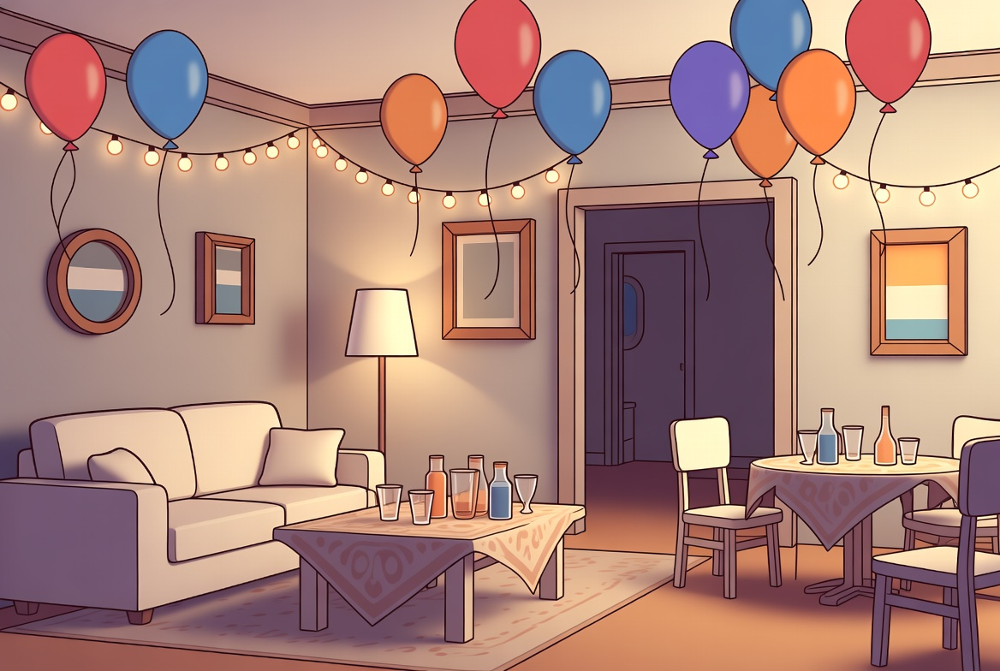

Ouça a conversa completa e acompanhe a tradução em português.

Anna e LukasWie alt bist du?Quantos anos você tem?
02 · Frases essenciais
Escute e repita
Aprenda cada expressão como um bloco completo.
01
Wie alt bist du?
Quantos anos você tem?
02
Ich bin vierundzwanzig Jahre alt.
Eu tenho vinte e quatro anos.
03
Wie ist deine Telefonnummer?
Qual é o seu número de telefone?
04
Meine Nummer ist null eins sieben sechs, zwei vier neun acht, drei fünf null.
Meu número é zero um sete seis, dois quatro nove oito, três cinco zero.
05
Kannst du sie wiederholen?
Pode repetir?
06
Ja, natürlich.
Sim, claro.
07
bist du,
Wie alt bist du? significa literalmente 'quão velho você é?'. O alemão usa o verbo sein, ser, e não haben, ter: por isso é bist du, e a resposta também usa ich bin.
08
ich bin.
Wie alt bist du? significa literalmente 'quão velho você é?'. O alemão usa o verbo sein, ser, e não haben, ter: por isso é bist du, e a resposta também usa ich bin.
03 · Entenda a lógica
Explicação em português
O alemão fica visível; a explicação ajuda você a entender como usar.
Explicação 1
Dialog im Kontext
Repare que a idade usa o verbo ser e o telefone é dito número por número. São dois usos diferentes dos mesmos algarismos.
Explicação 2
Wie alt bist du?
significa literalmente 'quão velho você é?'. O alemão usa o verbo
Explicação 3
Vierundzwanzig
é 'quatro e vinte', ou seja, vinte e quatro. Esse 'de trás para frente' confunde muitos brasileiros no começo.
Explicação 4
Nummer
O alemão adora juntar palavras assim; leia tudo como um bloco só.
 Lektion 4
Lektion 4